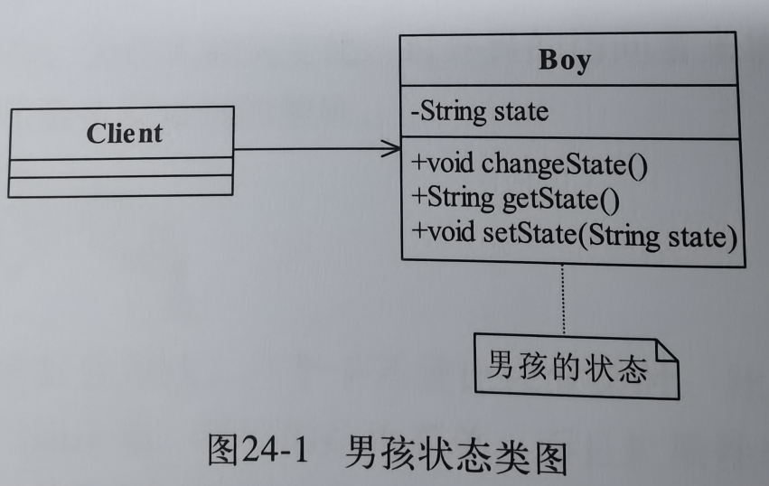
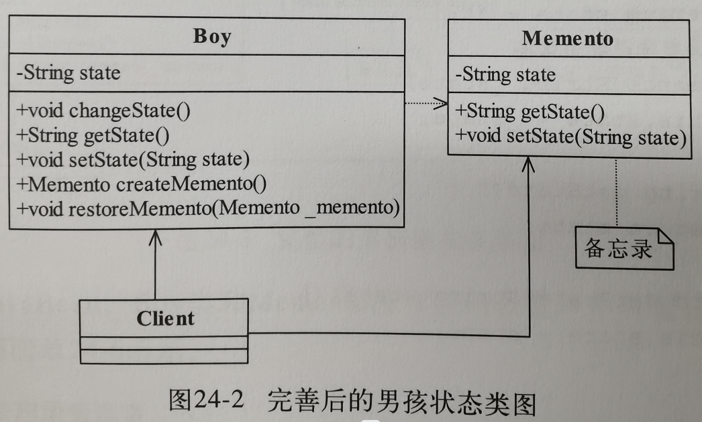
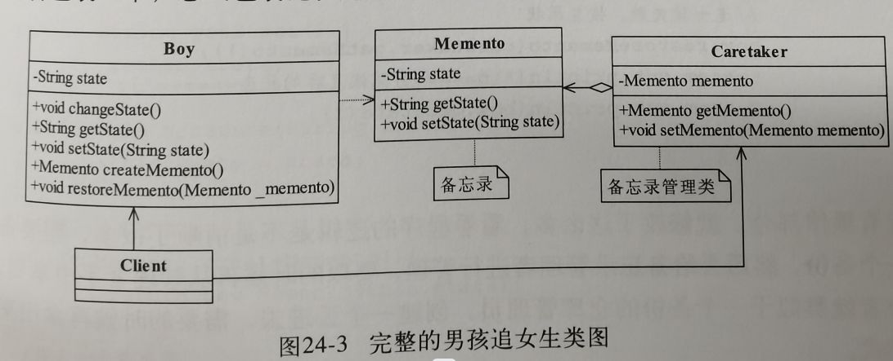
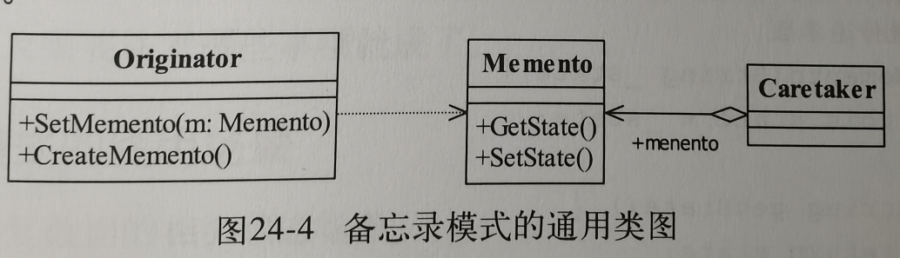
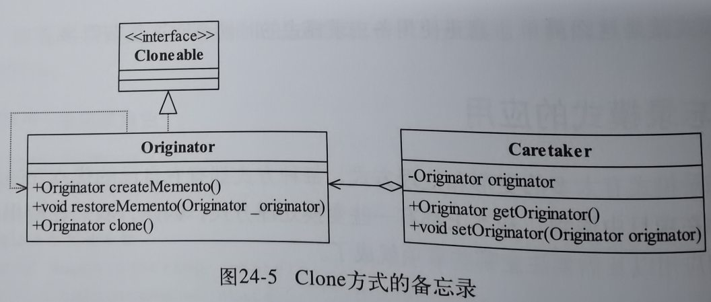
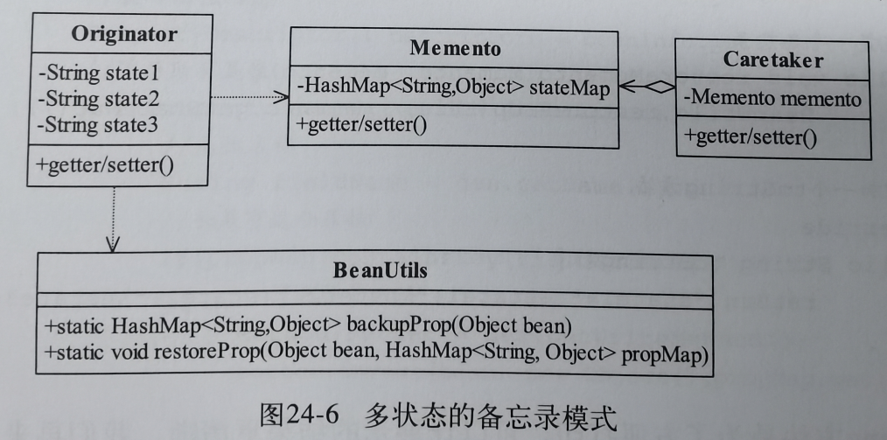
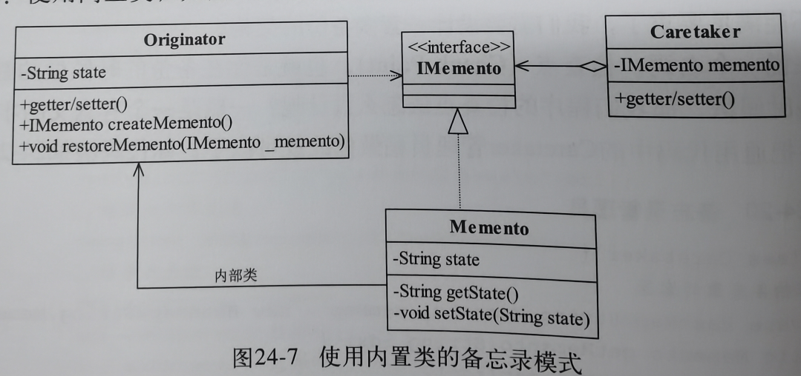

24.备忘录模式
1.例子引入
情境:预见未来电影中通过不断的回到过去来达到一个最佳结果,复制当前状态->尝试->失败后还原.
Boy男孩类:
获取状态,改变状态,设置状态存档
问题:现在场景要负责存档读档,备份档案,这不应该是高层模块关心的.

把原本客户端负责的存档部分抽取出来,让Memonto备忘录类来负责处理,这样高层模块Client就不用自己设置备份了
问题:现在高层模块需要自己准备备忘录,本来这个事情也不是高层模块关心的.

又把备忘录给封装了一下,现在让管理者来负责管理这个备忘录,现在高层模块仅仅是创建管理者,让管理者存档,获取调取存档,不再和具体的备忘录实现逻辑关联了(虽然觉得这样似乎更加复杂了,优点是对于存档类更方便执行一些操作了,每一层封装都意味着和下层模块的解耦).

2.正式定义
Without violating encapsulation,capture adn externalize an object's internal state so that the object can be restored to this state later.
翻译:在不破坏封装的前提下,捕获一个对象的内部状态,并在该对象之外保存这个状态.这样之后就可以将该对象恢复到原先保存的状态.
Originator原始角色
记录当前时刻的内部状态,负责定义哪些部分需要备份,负责创建和恢复备忘录数据.
Memento备忘录角色
负责存储Originator对象的内部状态,需要的时候提供这个状态
Caretaker备忘录管理员:
对备忘录进行管理,保存和提供备忘录

3.应用和扩展
使用场景:
需要回滚,需要保存和恢复数据的相关状态场景.
注意事项:
要主动管理备忘录的对象,不要出现大量备份带来的性能爆炸
1.clone方式的备忘录
原始角色直接通过实现Cloneable复制产生一个当前状态的副本
如果再进一步,可以直接把管理员也给去掉,直接自己实现即可,需要注意的是浅拷贝和深拷贝的问题,如果碰到复杂的场景容易产生逻辑混乱.

2.多状态的备忘录模式
通过BeanUtils类把所有的状态都存到HashMap,到时候再恢复,这样不但实现了多状态的恢复,也实现了部分恢复(可以扩展仅恢复某个部分)

3.多备份的备忘录
改动也很简单,把管理员改成容器类可以容纳多个备份,然后再给一个索引,就可以根据索引调用指定的备份了
4.带有访问权限的备忘录
备忘录是原始对象的子类,所以只有他能访问,但是我们也准备了空接口,所以其余模块可以通过接口来访问,但是因为空接口没有提供任何操纵数据的方法,所以是相对安全的.
这种设计叫做双接口设计,一个接口是业务的正常接口,实现所有的业务逻辑叫做宽接口,一个则是什么都没有的空接口,目的是提供其余模块的访问.
